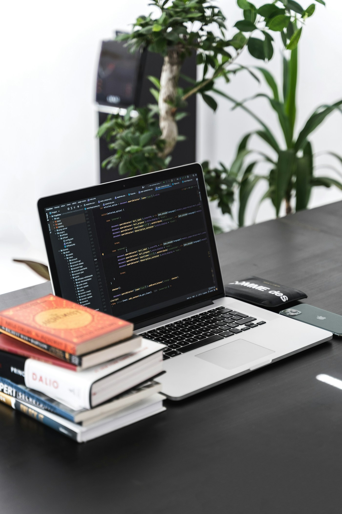

Sistem boleh dibuka oleh pengguna lain melalui pautan yang boleh dikongsi.
Panduan membina sistem ringkas menggunakan alat percuma
Cipta Sistem Percuma
Latihan praktikal untuk membantu pengguna membina sistem web ringkas dengan AI, pangkalan data, API dan halaman langsung tanpa kos langganan.
Pembentangan oleh Mohamad Nurakmal bin Ab Rasid.
Gaya Custom Gemini AUD
Hasil pembelajaran
Apa yang peserta akan dapat hari ini?
Pada akhir sesi, peserta bukan sekadar melihat contoh. Mereka akan memahami aliran penuh untuk membina, menyimpan data dan menerbitkan sistem sendiri.
Maklumat disimpan dalam Google Sheets supaya mudah dilihat dan disemak.
Google Apps Script menjadi jambatan antara halaman web dan data.
Cabaran biasa
Apabila sistem sudah siap di komputer sendiri
Ramai pengguna sudah boleh meminta AI menulis kod. Cabaran sebenar bermula apabila sistem itu perlu menyimpan data dan boleh digunakan oleh orang lain.

Kotak alat percuma
Alat yang digunakan dalam kelas ini
Semua alat di bawah boleh digunakan untuk latihan dan projek kecil tanpa kad kredit atau langganan berbayar.
Menjana idea, kod awal dan bantuan semakan.
Mengubah fail, menjalankan arahan dan membantu membetulkan ralat.
Pangkalan data ringkas yang mudah dilihat dan diedit.
Halaman awam percuma untuk sistem statik.
Konsep asas
Apakah itu sistem web statik?
Sistem statik ialah fail HTML, CSS dan JavaScript yang dihantar ke pelayar. Tiada pelayan khas yang menjalankan kod aplikasi sepanjang masa.
- HTML menyusun struktur dan kandungan halaman.
- CSS mengawal warna, jarak, saiz dan gaya visual.
- JavaScript mengawal tindakan seperti butang, borang dan panggilan API.
- Data boleh disambungkan melalui Google Apps Script.
Aliran kerja
Daripada idea kepada sistem yang boleh digunakan
Fokus kita ialah proses yang boleh diulang. Peserta tidak perlu menghafal semua sintaks, tetapi perlu tahu cara memberi arahan yang jelas.
Nyatakan tujuan, pengguna dan fungsi utama.
Minta AI bina HTML, CSS dan JavaScript yang mudah diuji.
Gunakan Sheets dan Apps Script sebagai API ringkas.
Hantar ke GitHub dan aktifkan Pages atau Cloudflare Pages.
Cara memberi arahan
Prompt yang baik ada tiga bahagian
Prompt yang baik membantu AI memahami apa yang hendak dibina, keadaan projek semasa dan had yang perlu dipatuhi.
- Nyatakan sistem yang hendak dibuat dan siapa penggunanya.
- Berikan konteks seperti fail, data, medan borang dan aliran kerja.
- Tetapkan had seperti tiada rangka kerja, mesra telefon dan kod mudah dibaca.
Google AI Studio
Tempat pantas untuk mula membina idea
Gunakan Google AI Studio untuk menjana kod awal, menyemak ralat dan memahami pilihan reka bentuk sebelum berpindah kepada projek yang lebih lengkap.
Kod kepada repositori
Simpan kod di GitHub
GitHub menyimpan sejarah perubahan, memudahkan perkongsian dan menjadi asas untuk menerbitkan halaman sistem secara percuma.
Namakan projek dengan jelas dan pilih tetapan awam jika ingin diterbitkan.
Masukkan index.html dan fail sokongan ke dalam repositori.
Pilih sumber daripada cabang utama dan folder akar.
Gunakan pautan awam untuk ujian dan maklum balas pengguna.
Pangkalan data mudah
Google Sheets sebagai tempat simpan data
Untuk sistem kecil, Google Sheets mencukupi sebagai pangkalan data ringkas. Ia mudah dibuka, diedit dan dikongsi oleh pemilik sistem.
Jambatan data
Google Apps Script sebagai API
Apps Script menjalankan JavaScript di pelayan Google. Ia boleh membaca dan menulis Google Sheets, kemudian memulangkan jawapan kepada halaman web.
- doGet(e) digunakan untuk membaca data melalui permintaan GET.
- doPost(e) digunakan untuk menerima data yang dihantar oleh borang.
- Fungsi bantuan memulangkan JSON supaya halaman web boleh memproses data.
Aliran data
Bagaimana halaman web bercakap dengan Sheets?
Halaman statik memanggil URL Apps Script. Apps Script mengurus bacaan atau simpanan data, kemudian Google Sheets menjadi tempat data sebenar disemak.
Nama, emel dan mesej dimasukkan pada halaman web.
JavaScript menghantar data ke URL Apps Script.
Data disahkan secara asas dan ditulis ke Sheets.
Pemilik membuka Google Sheets untuk semakan.
Sediakan helaian
Struktur Google Sheets yang dicadangkan
Mulakan dengan tab bernama contacts. Baris pertama ialah tajuk medan supaya Apps Script boleh menukar setiap baris kepada objek data.
- Namakan tab sebagai contacts.
- Letakkan medan: id, name, email, message, created_at.
- Buka Extensions, kemudian pilih Apps Script.
- Padam kod contoh dan masukkan kod API ringkas.
Terbitkan API
Jadikan Apps Script sebagai Web App
Selepas kod disimpan, Apps Script perlu diterbitkan sebagai Web App supaya halaman sistem boleh memanggilnya melalui URL HTTPS. Gunakan Deploy, New deployment, pilih Web app, tetapkan akses latihan kepada Anyone dan salin URL Web App.
Prompt 1
Bina halaman borang simpan data
Kotak teks ini boleh disalin dan diberikan kepada AI untuk membina halaman borang yang menghantar data ke Google Apps Script.
Prompt 2
Bina halaman paparan data
Prompt ini meminta AI membina halaman yang membaca data daripada Apps Script dan memaparkannya sebagai senarai yang kemas.
Keselamatan asas
Bila perlu tambah log masuk?
Untuk latihan awam, borang terbuka boleh diterima. Untuk sistem dalaman, halaman paparan data wajar dilindungi supaya maklumat tidak dibuka kepada semua orang.
- Jangan simpan kata laluan terus dalam HTML atau JavaScript.
- Simpan senarai pengguna dalam Google Sheets yang kekal peribadi.
- Apps Script menyemak pengguna dan memulangkan token sesi.
- Halaman paparan hanya membaca data jika token masih sah.
Prompt 3
Tambah log masuk ringkas
Gunakan prompt ini apabila sistem perlu mempunyai kawalan akses asas untuk paparan data dalaman.
Pilihan terbitan
GitHub Pages atau Cloudflare Pages?
Kedua-duanya percuma untuk laman statik. Pilih mengikut keperluan projek dan keselesaan peserta.
Sesuai untuk portfolio, latihan, dokumentasi dan projek kecil.
Sesuai apabila mahu CDN lebih kuat, analitik dan pautan pratonton.
Semak paparan telefon, borang dan bacaan data sebelum pautan dikongsi.
Pembina prompt interaktif
Isi soalan, terus dapat prompt sistem
Peserta masukkan maklumat sistem sendiri. Slide ini akan jana prompt lengkap yang logik dan boleh terus disalin.
Prompt terus untuk copy paste
Setup automatik
Setup automatik Google Sheets dan Apps Script
Kod ini menggunakan maklumat daripada slide 20. Peserta hanya perlu tampal kod dalam Google Apps Script, jalankan setupSheets, kemudian deploy sebagai Web App.
- 1. Buka Google Sheets Cipta fail baharu, kemudian pergi ke Extensions dan pilih Apps Script.
- 2. Tampal kod ini Padam kod contoh, tampal kod sebelah kanan, kemudian simpan projek.
- 3. Jalankan setupSheets Fungsi ini akan cipta tab contacts, header data, dan tab users jika pilihan log masuk digunakan.
- 4. Deploy sebagai Web App Pilih akses yang sesuai untuk latihan, salin URL Web App, kemudian tampal semula pada slide 20.
Kod Apps Script automatik
Panduan fasilitator
Panduan mengajar langkah demi langkah
Gunakan slide ini sebagai susunan mengajar. Fokusnya bukan menghafal kod, tetapi membantu peserta faham aliran membina sistem ringkas dengan alat percuma.
Objektif pembelajaran
Peserta faham bahawa sistem ringkas mempunyai tiga lapisan: paparan pengguna, tempat simpan data, dan Apps Script sebagai penghubung antara kedua-duanya.
Ayat pembuka yang boleh digunakan
Hari ini kita akan bina sistem kecil secara tersusun. Tuan puan hanya perlu tahu apa masalah yang mahu diselesaikan, kemudian kita gunakan prompt, Google Sheets dan Apps Script untuk menjadikannya berfungsi.
Terangkan hasil akhir
Tunjukkan bahawa peserta akan pulang dengan idea sistem, prompt lengkap, kod Apps Script dan pautan penerbitan yang boleh diuji.
Pilih contoh masalah
Minta peserta pilih satu situasi mudah seperti aduan fasiliti, tempahan bilik, rekod pelanggan atau maklum balas program.
Demo slide 20
Isi nama sistem, tujuan, pengguna, ciri dan medan data. Tekankan bahawa jawapan yang jelas akan menghasilkan prompt yang lebih kemas.
Setup slide 21
Terangkan bahawa kod di slide 21 dijana daripada jawapan slide 20. Salin kod, tampal dalam Apps Script dan jalankan setupSheets.
Deploy Web App
Tunjukkan cara deploy Apps Script, salin URL Web App dan tampal semula dalam prompt atau fail sistem yang dibina.
Uji dan terbitkan
Hantar satu rekod percubaan, semak data masuk ke Google Sheets, kemudian terbitkan halaman melalui GitHub Pages atau Cloudflare Pages.